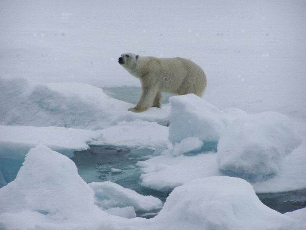

OSO POLAR
EL OSO POLAR O TAMBIEN CONOCIDO COMO OSO BLANCO, PERTENECE A LAS ESPECIES DE MAMIFEROS CARNIVOROS MAS GRANDES DEL MUNDO. VIVE EN EL HEMISFERIO NORTE DE LA TIERRA Y ES CONSIDERADO UN GRAN SUPERDEPREDADOR. PUEDE VIVIR MAXIMO 30 AÑOS.

EL OSO POLAR O TAMBIEN CONOCIDO COMO OSO BLANCO, PERTENECE A LAS ESPECIES DE MAMIFEROS CARNIVOROS MAS GRANDES DEL MUNDO. VIVE EN EL HEMISFERIO NORTE DE LA TIERRA Y ES CONSIDERADO UN GRAN SUPERDEPREDADOR. PUEDE VIVIR MAXIMO 30 AÑOS.
SE CREE QUE LA FAMILIA URSIDAE SE SEPARO DE LOS OTROS CARIVOROS HACE APROXIMADAMENTE 38 MILLONES DE AÑOS. LA SUBFAMILIA URSINAE SE ORIGINO HACE UNOS 4,2 MILLONES DE AÑOS. SEGUN LA EVIDENCIA FOSIL Y LOS ANALISIS DE ADN, HACE SOLO 150 000 AÑOS OCURRIO LA DIVERGENCIA DE ESTA ESPECIE Y EL OSO PARDO (URSUS ARCTOS).EL FOSIL DEL OSO POLAR MAS ANTIGUO QUE SE CONOCE DATA DE HACE APROXIMADAMENTE 130 000 A 110 000 AÑOS Y SE HALLO EN LA ISLA PRINCIPE CARLOS FORLAND,EN 2004.LOS FOSILES MUESTRAN QUE HACE ENTRE 10 000 Y 20 000 AÑOS, LOS MOLARES DEL OSO POLAR DIFERIAN SIGNIFICATIVAMENTE CON RESPECTO A LOS DEL OSO PARDO.ES POSIBLE QUE LA ESPECIE SE HAYA ORIGINADO A PARTIR DE UNA POBLACION AISLADA DE OSOS PARDOS, SOMETIDA A UNA FUERTE PRESION GENETICA DURANTE LAS GLACIACIONES DEL PLEISTOCENO.ESTUDIOS GENETICOS REALIZADOS POSTERIORMENTE MUESTRAN QUE INCLUSO ALGUNAS POBLACIONES DE OSO PARDO SE ENCUENTRAN MAS RELACIONADAS AL OSO POLAR QUE CON OTRAS DE SU MISMA ESPECIE;ESTO IMPLICA QUE EL OSO POLAR NO CUMPLE CON ALGUNAS DE LAS DEFINICIONES DE ESPECIE.ADICIONALMENTE, LAS DOS ESPECIES PUEDEN REPRODUCIRSE Y OBTENER HIBRIDOS FERTILES (GROLARES), INDICANDO SU RECIENTE DIVERGENCIA Y SU SIMILITUD GENETICA.SIN EMBARGO, SE CONSIDERAN ESPECIES SEPARADAS PORQUE NINGUNA DE LAS DOS ESPECIES PUEDEN SOBREVIVIR A LARGO PLAZO EN EL NICHO ECOLOGICO DE LA OTRA, TIENEN DIFERENCIAS MORFOLOGICAS Y FENOTIPICAS; METABOLISMO Y COMPORTAMIENTO SOCIAL DISTINTO.
ESTOS MAMIFEROS MIDEN DE 2.4 A 3 METROS DE LONGITUD CON UN PESO DE 350-700 KILOS EN EL CASO DE LOS MACHOS, Y DE 1.8 A 2.4 METROS CON 150-250 KILOS DE PESO EN LAS HEMBRAS. SU CUERPO ESTA PERFECTAMENTE ADAPTADO A SU TIPO DE HABITAT Y A LAS CONDICIONES EXTREMAS DE ESTE.ES POR ELLO QUE POSEE PATAS DESARROLLADAS PARA RESISTIR LARGAS CAMINATAS ASI COMO PARA NADAR A LEJANAS DISTANCIAS.SUS OREJAS Y LA COLA SON PEQUEÑAS PARA MANTENER EL CALOR CORPORAL.PARA REGULAR SU TEMPERATURA, SU PIEL CUENTA CON UNA GRUESA CAPA DE GRASA Y UN FRONDOSO PELAJE TRASLUCIDO CONFORMADO POR MILES DE PELOS LLENOS DE AIRE QUE LO MANTIENEN A UNA TEMPERATURA ESTANDAR. REALMENTE SU PIEL ES COLOR NEGRO, ESTO PARA ATRAER MAS AL SOL Y AUMENTAR SU CALOR CORPORAL.EL COLOR BLANCO DE SUS PELOS ES MAS BIEN UN REFLEJO DE LA LUZ Y NO SU COLOR EN SI.
COMO SE MENCIONO AL PRINCIPIO, HABITAN EN LA PARTENTRIONAL DEL PLANETA, ABARCANDO CANADA, GROENLANDIA, DINAMARCA, NORUEGA, RUSIA, ALASKA E ISLANDIA CON ALGUNOS EJEMPLARES. EL PAISAJE DONDE HABITAN ES TIPICO DE UN AMBIENTE DE TUNDRA: EXTENSO, CUBIERTO DE NIEVE Y APARENTEMENTE SIN RASTRO DE VIDA. EN VERANO SUELE VERSE DIFERENTE EN ALGUNAS ZONAS, PUES LAS TEMPERATURAS MAS ELEVADAS PROVOCAN EL DESHIELO Y LA ENTRADA A LA VIDA VEGETAL. EL OSO POLAR ES UN MAMIFERO ADAPTABLE A SU ENTORNO, PERO LOS CAMBIOS DE ESTACION TAMBIEN PUEDEN REPRESENTAR UN PROBLEMA EN RELACION CON LA DISPONIBILIDAD DE ALIMENTOS.

ESTE ANIMAL CARNIVORO SE ALIMENTA DE CRIAS DE FOCAS Y ALGUNAS VECES DE RENOS, LLEGANDO A COMER HASTA 30KG DIARIOS DE ALIMENTO. DEBIDO A QUE EL AGUA DE ESOS LUGARES ES SALADA, NO LA CONSUMEN, Y POR LO TANTO APROVECHAN LOS FLUIDOS NECESARIOS DE LA SANGRE DE SUS PRESAS. SE HAN ESTUDIADO CASOS DE CANIBALISMO, PRINCIPALMENTE PROVENIENTES DE MACHOS QUE AL TENER ESCASEZ DE ALIMENTO, OPTAN POR ALIMENTAR DE ALGUN OTRO OSO POLAR JOVEN O DEBIL.
SU MADUREZ SEXUAL LA ALCANZAN A LOS 3 O 4 AÑOS Y EL PERIODO DE APAREAMIENTO SE DA EN LOS MESES DE ABRIL Y MAYO EN DONDE MACHO Y HEMBRA CONVIVEN, TRATANDOSE AMISTOSAMENTE PARA POCO A POCO RELACIONARSE. EL MACHO PUEDE SEGUIR LAS HUELLAS QUE LA HEMBRA DEJA HASTA POR 100 KM O UN POCO MAS Y PELEAR CON OTROS MACHOS AL GRADO DE DEJARSE HERIDOS, CON CICATRICES O DIENTES ROTOS.TODO PARA DETERMINAR QUIEN TENDRA EL DERECHO DE REPRODUCCION. EL OSO BLANCO ES POLIGAMO, POR LO QUE LA HEMBRA PUEDE TENER CACHORROS DE MACHOS DIFERENTES. UNA VEZ FECUNDADO EL OVULO,ESTE QUEDA EN ESTADO SUSPENDIDO. PARA ELLO, LAS HEMBRAS EN ESPERA DE UNA CRIA SE REFUGIAN EN INVIERNO, PERO ANTES DE ESO, ALMACENAN GRANDES CANTIDADES DE GRASA EN SU CUERPO YA QUE NO SE ALIMENTAN EN ESE PERIODO. LUEGO DEL NACIMIENTO, LOS CACHORROS SE ALIMENTAN DE LECHE, LO QUE PROVOCA QUE LA MADRE PIERDA MUCHO PESO.PARA VERANO DEBE DE RECUPERARLO POR COMPLETO. LOS CACHORROS NACEN CON 30CM DE ALTO Y 700G DE PESO, CARECIENDO DE DIENTES, VISTA Y FUERZA ALGUNA, PERO EN CINCO MESES CRECEN TAN RAPIDO QUE YA PUEDEN ACOMPAÑAR A LA MADRE EN EXPLORACIONES. PASAN JUNTOS CINCO MESES MAS EN LO QUE EL OSEZNO APRENDE A CONSEGUIR SU ALIMENTO Y A PROTEGERSE DE OTROS OSOS POLARES ADULTOS QUE SUELEN COMER PEQUEÑAS CRIAS. EN ALGUNOS CASOS PUEDEN CONVIVIR HASTA DOS AÑOS Y MEDIO.
ELLOS ENTRE SI REPRESENTAN UN PELIGRO, PRINCIPALMENTE CUANDO SE DAN ENFRENTAMIENTOS ENTRE ADULTOS Y OSEZNOS. DE IGUAL FORMA, LAS MORSAS DE MAYOR TAMAÑO PUEDEN SER CONSIDERADAS COMO UNA AMENAZA, AUNQUE ESTO NO SEA MUY FRECUENTE. A LO LARGO DE LOS AÑOS, EL HOMBRE HA CAZADO OSOS POLARES PARA PROVEERSE DE SU CARNE Y PIEL. EN OTROS CASOS, SIMPLEMENTE POR DEPORTE O POR FALTA CREENCIA DE QUE ATACAN AL SER HUMANO. ESTO NO SUCEDE, SIEMPRE Y CUANDO NO SE SIENTA AMENAZADO DENTRO DE SU HABITAT NATURAL, COMO CUALQUIER OTRO ANIMAL. EN 2008, LA CAZA INMODERADA ESTUVO A PUNTO DE OCASIONAR LA EXTINCION DE ESTA ESPECIE, PERO ORGANIZACIONES A FAVOR DEL MEDIO AMBIENTE, PROHIBIERON ESTAS ACCIONES HUMANAS EN VARIOS PAISES DEL MUNDO O ESTABLECIERON LIMITES AUTORIZADOS PARA CAZAR CIERTA CANTIDAD AL AÑO. POR OTRO LADO, IGUAL DE ALARMANTE ES EL PROBLEMA DEL CALENTAMIENTO GLOBAL QUE OCASIONA EL DERRETIMIENTO DEL HIELO REPRESENTANDO UN PELIGRO CONSTANTE PARA ESTE Y OTROS ANIMALES QUE VIVEN EN LAS MISMAS CONDICIONES,OBLIGANDO AL OSO BLANCO A RETIRARSE A TIERRA FIRME Y A TOMAR ACCIONES QUE CAMBIAN POR COMPLETO SU CICLO REPRODUCTIVO.ESTO HA PROVOCADO LA DISMINUCION DE NACIMIENTOS DE OSO POLAR.